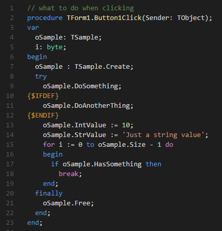
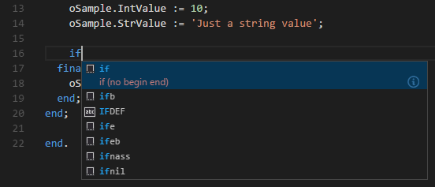

Broader dialect and platform support
Pascal 10.0 improves syntax highlighting for FreePascal and Oxygene and extends where and how the extension can run.
Visual Studio Code Extension
Pascal brings full language support for Delphi, FreePascal, and Oxygene dialects to Visual Studio Code, with rich syntax highlighting, a huge set of snippets, and source code navigation.

What's new in Pascal 10.0
Pascal 10.0 improves syntax highlighting for FreePascal and Oxygene and extends where and how the extension can run.
Features
Full syntax highlighting for Delphi and FreePascal files, forms, and projects.
02Almost 40 snippets covering classes, case statements, begin/end blocks, and more.
03Navigate methods, attributes, classes, and interfaces using native VS Code commands.
04Compile Delphi and FreePascal projects and jump straight to errors and warnings.
Syntax highlighting
Pascal supports full syntax highlighting for Delphi and FreePascal, including the keywords, forms, and project files used across both ecosystems.
Recognizes .pas, .p, .dfm, .fmx, .dpr, .dpk, .lfm, .lpr, and .ppr files.
Pair Pascal with the Pascal Formatter extension to format your source code.
Snippets
Type common Pascal constructs and expand them instantly, from begin/end blocks and case statements to full classes with constructors and destructors.
begin — begin/end blockclassc — class with constructor/destructorcase — case statement
FAQ
Pascal adds support for the Pascal language and its dialects, including Delphi, FreePascal, Lazarus, and Oxygene, with dedicated keyword sets for each.
Syntax highlighting covers .pas, .p, .dfm, .fmx, .dpr, .dpk, .lfm, .lpr, and .ppr files.
Install GNU Global, Exuberant Ctags, Python, and Python Pygments, then run Pascal: Generate Tags once per project. Use Pascal: Update Tags afterwards to keep references current.
Yes. Use the Task Build examples from the documentation to compile with DCC32 or FPC and navigate errors, warnings, and hints directly in the editor.
Yes, Pascal is published to both the Visual Studio Marketplace and Open VSX, so it works with VS Code and compatible editors.
Yes! It works on all VS Code forks, ensuring compatibility and seamless integration with your favorite tools.
If you have a feature request, bug report, or suggestion, please submit it through our GitHub Issues page. We appreciate your feedback!
If you have a question that's not covered in the FAQ, feel free to reach out through our support channels at GitHub Discussions. We're here to help!
Donate
Pascal is open source, and your support helps keep maintenance, improvements, and ecosystem compatibility moving forward.